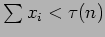

Next: Primitive utility measures
Up: Schedule quality metrics (SQM)
Previous: Schedule quality metrics (SQM)
Contents
Work out the best utility that can be achieved during the night (PU) (i.e. assume we can do all the groups that could be done and do them at the best possible times) - this is after all the ultimate aim of the scheduler ! Work out the actual utility scored by the scheduler that night - the Efficiency (E) is then the ratio. May need to scale - after all if oversubscribed we could never do it all anyway try load scaling 1/L (load defined as aggregate (average) demand) or maybe better as sum of execution times of all groups that can and should be executed tonight. Could also try rank-scaling top(n) such that
 - I cant quite recall what I meant by that at the moment.
Steve Fraser
2008-01-31